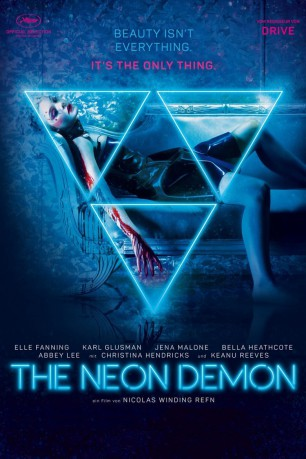
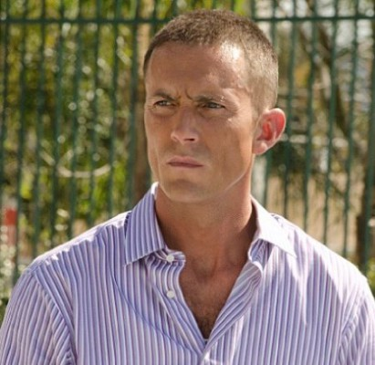

#4564 The Neon Demon
 
 IMDB-Wertung: 6.3 / 10
IMDB-Wertung: 6.3 / 10  Metascore: 0
Metascore: 0 
Los Angeles – Stadt der unbegrenzten Möglichkeiten, Glamourwelt, Schauplatz zahlloser Träume und Abgründe. Als das junge aufstrebende Model Jesse nach L.A. kommt, kann sie nicht ahnen, dass ihre Jugend und Lebendigkeit schon bald den Neid einer Gruppe schönheitsfanatischer Frauen auf sich ziehen wird. Und die scheuen keinerlei Mittel, um das zu bekommen, was Jesse hat…
Jahr: 2016
Dauer: 117 Minuten
FSK: 16
Land: Frankreich Studio: Koch MediaTonspuren: DD5.1 - ,
Untertitel: Deutsch,
Auflösung: 1080p (1920x808) Größe: 9277 MB
Genre: Horror, Thriller
Regisseur: Nicolas Winding Refn
Drehbuch: L.M. Kit Carson
Soundtrack:
Darsteller:
 Elle Fanning als Jesse
Elle Fanning als Jesse- Karl Glusman als Dean
 Jena Malone als Ruby
Jena Malone als Ruby Bella Heathcote als Gigi
Bella Heathcote als Gigi Abbey Lee als Sarah
Abbey Lee als Sarah-  Desmond Harrington als Jack
 Christina Hendricks als Roberta Hoffmann
Christina Hendricks als Roberta Hoffmann Keanu Reeves als Hank
Keanu Reeves als Hank Charles Baker als Mikey
Charles Baker als Mikey- Jamie Clayton als Casting Director
- Stacey Danger als Casting Assistant
- Rebecca Dayan als Dresser
- Taylor Marie Hill als Flirty Model #1
- Vanessa Martinez als Waitress
- Jodie Turner-Smith als Roberta Hoffmann's Assistant
- Charlize Cotton als Hopeful Model #2
- Cody Renee Cameron als Embalmed Female Corpse
- Alysse Reynolds als Model #1
- Frances Parsons als Model #8
- Kiera Smith als Model #17
- Lavinia Postolache als Model #18
 Madeleine Woolner als Costume Supervisor
Madeleine Woolner als Costume Supervisor- Cameron Brinkman als Male Model , uncredited
- Liv Corfixen als Uncomfortable Restaurant Guest , uncredited
 Lucas Di Medio als Male Model , uncredited
Lucas Di Medio als Male Model , uncredited- Collin Lee Ellis als Male Model , uncredited
- Rebecca Kiser als Girl , uncredited
- Sophie Mazzaro als Model , uncredited
- Samantha Miller als Model , uncredited
- Tessa Miller als Young Girl , uncredited
- Chris Muto als Nick , uncredited
 Alessandro Nivola als Roberto Sarno , uncredited
Alessandro Nivola als Roberto Sarno , uncredited- Helen Wilson als Seamstress
- Houda Shretah als Roberto Sarno's Assistant
- Jason Schneidman als Pool Photo Shoot Hairstylist
- Rachel Dik als Carrie
- Lily Moffett als Hopeful Model #1
- Allie Lewis als Hopeful Model #3
- Georgia Fowler als Model Joy
- Dani Seitz als Young Model
- Steve Murillo als Mortician
- Autumn Alderson als Model #2
- Lucy Cronkite als Model #3
- Tea Jo als Model #4
- Jennifer Wade als Model #5
- Olga Glenn als Model #6
- Lareja Drane als Model #7
- Aminata Mboup als Model #9
- Claire Eberle als Model #10
- Anna Gonzales als Model #11
Datei: X:\2016(N-Z)\Neon Demon, The (2016, FSK16, 1920x808).mkv seit 14.10.2016
Festplatte: HD 2016(A-Z)
 Es gibt insgesamt 182 Filme in der Gruppe '2016(N-Z)'
Es gibt insgesamt 182 Filme in der Gruppe '2016(N-Z)'